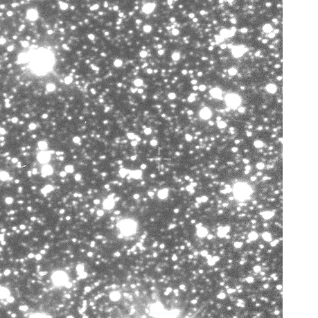

Supported here
- A transient, symmetric brightening
- A PSPL event timescale and impact parameter
- Model residuals and information criteria
A real OGLE-IV case study · Galactic bulge
Microlensing does not photograph the foreground object. It reveals it when gravity bends a background star’s light into a smooth, temporary brightening. Here, 360 public measurements are tested against that prediction.

A foreground lens passes near our line of sight. Its gravity makes multiple unresolved images of the source star, increasing the total light. For one isolated lens moving steadily, the brightening should be smooth and nearly symmetric.
02 / EVIDENCE
Loading the public OGLE photometry…
A constant star is the null hypothesis. A point-source/point-lens curve is fitted both with and without extra unresolved blend light. Lower BIC is preferred because it rewards fit quality but penalises unnecessary parameters.
| Explanation | Parameters | Reduced χ² | BIC | Reading |
|---|
WHAT THE FIT ACTUALLY MEANS
04 / RESEARCH BOUNDARY
F(t) = FsA[u(t)] + Fb
The data mildly prefer no additional blend parameter: ΔBIC is shown above.REPRODUCIBILITY